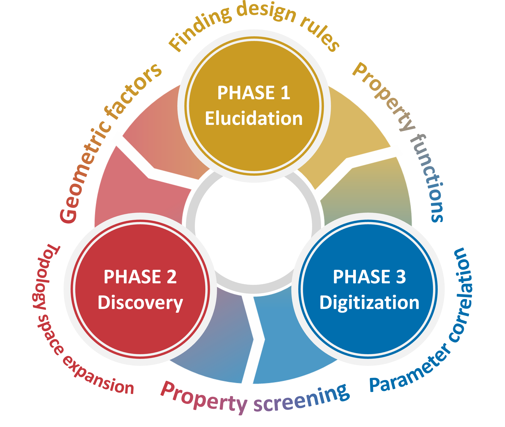

Geometry-Informed Advances in Nano-Tunable Solids

GIANTS stands for Geometry-Informed Advances in Nano-Tunable Solids. It is a research framework built on the idea that geometrical factors can be identified, translated into predictive design rules, and ultimately digitized into a practical language for the discovery of advanced framework materials.
The GIANTS Lab is organized around three connected phases: Phase 1: Elucidation, Phase 2: Discovery, and Phase 3: Digitization. Together, these phases define a closed research loop linking geometrical understanding, materials exploration, and data-driven generalization.
The first phase focuses on uncovering the geometrical factors that govern the behavior of nano-tunable solids. The goal is to identify hidden structural rules and connect them to property functions, thereby establishing rational design principles for framework materials.
The second phase expands the accessible topology space and uses geometry-based insights to discover new materials. In this stage, the central aim is not only to find new solids, but to formulate how geometrical descriptors can guide the exploration of previously unknown structural possibilities.
The third phase translates the accumulated chemical and structural understanding into a digital framework. By building parameter correlations and enabling systematic property screening, this phase transforms geometrical knowledge into a scalable platform for accelerated materials research.
Through this three-phase framework, the GIANTS Lab aims to establish a geometry-based language for reticular and framework solids, enabling a continuous cycle of explanation, discovery, and digitization for the next generation of porous and adaptive materials.